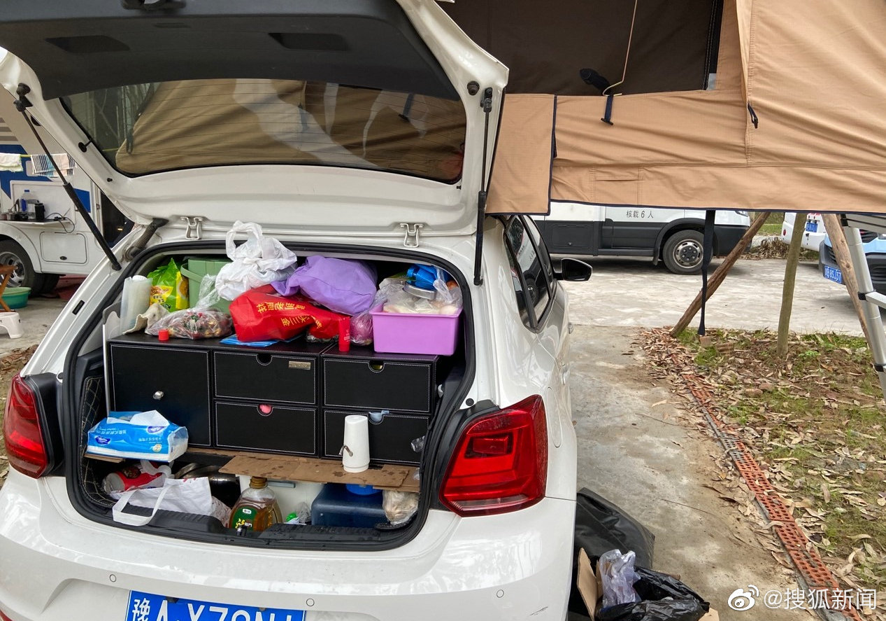
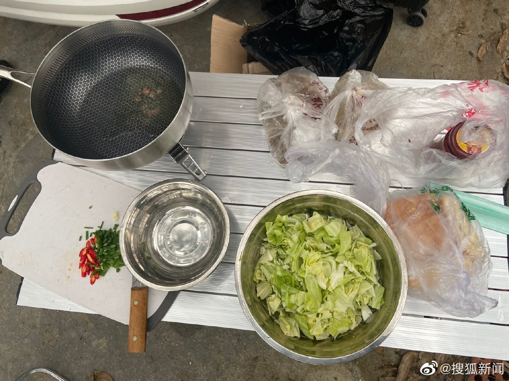

@搜狐新闻:
【独家|56岁女子蓄谋一年“逃离”家庭：丈夫离开客厅才能看电视剧 】在2020年的某一个时刻，56岁的苏敏下定决心要为自己活一次：离开家庭，开车自驾游去。她说，“阿姨最难的时候已经过去了”：生小孩，把女儿抚养长大，看着她结婚，有了自己的小孩，再看顾外孙到上学的年龄。她已经履行完社会意义上的所有母职。50岁时，月经从身体里消失了，记忆的衰退和皱纹一起加速闯进生命，她觉得自己不能再等了。
直到去年冬天的某一个下午，她密不透风的人生迎来了一个休止符。那天她一如既往地上网查找穿越小说，不知怎么点进去一个链接，是一位博主在分享自驾游经历。苏敏瞬间被击中了：居然还有这样的选项？苏敏觉得自己也可以。她当即告诉了女儿，女儿看了一眼视频，以为她只是开玩笑，和她讲，你这不定啥时候才能出去。女儿生下一对双胞胎，需要苏敏帮忙看孩子。但苏敏这次目标坚定，“我说明年小孩儿一上幼儿园我就走”。
不料被一场蔓延全国的疫情打断，幼儿园延迟入学，苏敏也不得不困守在家里。9月，终于把两个外孙送进了幼儿园，苏敏觉得自己“任务完成了”直接下单了放进购物车里的装备。快递一件件送到家里来，丈夫有点慌了，“我要是走了他得从女儿家搬走，没有人给他做饭了。”苏敏说。
开着POLO，她一路从郑州开到小浪底，三门峡，又跑到西安住了一周。从西安往成都的途中，要绕过秦岭，那里的险峻令驾驶经验丰富的司机都恐惧。苏敏在山里绕了8、9个小时，一路上只见到两辆车，但恐惧、孤独完全不存在，她只觉得自由。当天中午，秦岭雾气缭绕，能见度不足200米，苏敏停下车待了会儿。风也是自由的风，她拍了一个小视频发到家庭群里：“你看这个路多陡，这个山多漂亮”。只有女儿回复，让她注意安全。
苏敏告诉我，结婚30多年，大多数时候，她与丈夫两个人像是活在平行世界：小时候带女儿去逛街，母女俩走在前面，丈夫一个人走在后；女儿上初三寄宿后，两个人就分房睡。听到丈夫关门离开的声音，她才拥有沙发、电视的使用权，看自己喜欢的电视剧。再后来，女儿读完大学回来，结婚生小孩后，两个人不得不住一间房子，苏敏和丈夫干脆买了上下铺。她睡上面，丈夫睡下面，晚上两个人戴上耳机，各玩各的手机。衣服、鞋子从来都是分开摆。有段时间，苏敏甚至想买个床帘隔开，怕女婿觉得自己家过于奇怪才放弃了。
在家里，苏敏不敢多说话。因为丈夫最大的乐趣就是挑刺，苏敏觉得自己过得憋屈极了，“你在自己家说话都不自由。”
苏敏甚至能够根据丈夫的表情判断自己的处境：要发火前丈夫会“把眼一瞪”，那双相亲时曾经让她动心的大眼睛现在让她恐惧，“就是怕他发火打我”。苏敏说，丈夫发起火来会摔东西、打人，一拳头把她怼一边去。最严重的一回，她也气急了，不知从哪拉了把凳子，明明可以打到他的，结果有一瞬间的迟疑，把凳子摔到旁边，对方拿起来就往她背上砸，疼了好些天。
2019年，苏敏查出中度抑郁。医生对她说，人的脑部有两条血管共同运行，一条是“长江”，一条是“黄河”，她这个黄河血管前端有点堵塞，脑部供血不足，所以经常感到头晕、头疼。最严重的时候，她在家里经常不自觉地流眼泪，开始吃起治疗抑郁的药。
车子开出去几百公里，苏敏才敢给母亲打了出门后的第一个电话。她只说出门散散心，没提更具体的。母亲的观念仍然停留在“家和万事兴”的层级，每次都劝苏敏说，好好过日子呗，你找了这样的人，孩子都有了你咋弄，还能不顾孩子？“我妈总说，他除了有点抠，心眼也不坏”，苏敏知道，在母亲眼里，老公没出轨没闹离婚，就感觉“日子还能过下去”。她永远不会跟母亲说出口，30岁之后，自己和丈夫基本上没有再同居过。
接下来，她想先去昆明，再去丽江、大理，在洱海边露营，听着鸟鸣入睡。最后去海南过年。女婿本来想让她赶在过年前赶回家，但苏敏“不想给大家干活了”。#洞见计划# 网页链接
网页链接
直到去年冬天的某一个下午，她密不透风的人生迎来了一个休止符。那天她一如既往地上网查找穿越小说，不知怎么点进去一个链接，是一位博主在分享自驾游经历。苏敏瞬间被击中了：居然还有这样的选项？苏敏觉得自己也可以。她当即告诉了女儿，女儿看了一眼视频，以为她只是开玩笑，和她讲，你这不定啥时候才能出去。女儿生下一对双胞胎，需要苏敏帮忙看孩子。但苏敏这次目标坚定，“我说明年小孩儿一上幼儿园我就走”。
不料被一场蔓延全国的疫情打断，幼儿园延迟入学，苏敏也不得不困守在家里。9月，终于把两个外孙送进了幼儿园，苏敏觉得自己“任务完成了”直接下单了放进购物车里的装备。快递一件件送到家里来，丈夫有点慌了，“我要是走了他得从女儿家搬走，没有人给他做饭了。”苏敏说。
开着POLO，她一路从郑州开到小浪底，三门峡，又跑到西安住了一周。从西安往成都的途中，要绕过秦岭，那里的险峻令驾驶经验丰富的司机都恐惧。苏敏在山里绕了8、9个小时，一路上只见到两辆车，但恐惧、孤独完全不存在，她只觉得自由。当天中午，秦岭雾气缭绕，能见度不足200米，苏敏停下车待了会儿。风也是自由的风，她拍了一个小视频发到家庭群里：“你看这个路多陡，这个山多漂亮”。只有女儿回复，让她注意安全。
苏敏告诉我，结婚30多年，大多数时候，她与丈夫两个人像是活在平行世界：小时候带女儿去逛街，母女俩走在前面，丈夫一个人走在后；女儿上初三寄宿后，两个人就分房睡。听到丈夫关门离开的声音，她才拥有沙发、电视的使用权，看自己喜欢的电视剧。再后来，女儿读完大学回来，结婚生小孩后，两个人不得不住一间房子，苏敏和丈夫干脆买了上下铺。她睡上面，丈夫睡下面，晚上两个人戴上耳机，各玩各的手机。衣服、鞋子从来都是分开摆。有段时间，苏敏甚至想买个床帘隔开，怕女婿觉得自己家过于奇怪才放弃了。
在家里，苏敏不敢多说话。因为丈夫最大的乐趣就是挑刺，苏敏觉得自己过得憋屈极了，“你在自己家说话都不自由。”
苏敏甚至能够根据丈夫的表情判断自己的处境：要发火前丈夫会“把眼一瞪”，那双相亲时曾经让她动心的大眼睛现在让她恐惧，“就是怕他发火打我”。苏敏说，丈夫发起火来会摔东西、打人，一拳头把她怼一边去。最严重的一回，她也气急了，不知从哪拉了把凳子，明明可以打到他的，结果有一瞬间的迟疑，把凳子摔到旁边，对方拿起来就往她背上砸，疼了好些天。
2019年，苏敏查出中度抑郁。医生对她说，人的脑部有两条血管共同运行，一条是“长江”，一条是“黄河”，她这个黄河血管前端有点堵塞，脑部供血不足，所以经常感到头晕、头疼。最严重的时候，她在家里经常不自觉地流眼泪，开始吃起治疗抑郁的药。
车子开出去几百公里，苏敏才敢给母亲打了出门后的第一个电话。她只说出门散散心，没提更具体的。母亲的观念仍然停留在“家和万事兴”的层级，每次都劝苏敏说，好好过日子呗，你找了这样的人，孩子都有了你咋弄，还能不顾孩子？“我妈总说，他除了有点抠，心眼也不坏”，苏敏知道，在母亲眼里，老公没出轨没闹离婚，就感觉“日子还能过下去”。她永远不会跟母亲说出口，30岁之后，自己和丈夫基本上没有再同居过。
接下来，她想先去昆明，再去丽江、大理，在洱海边露营，听着鸟鸣入睡。最后去海南过年。女婿本来想让她赶在过年前赶回家，但苏敏“不想给大家干活了”。#洞见计划#
- 
- 